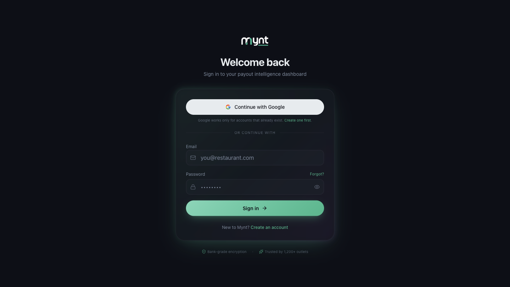
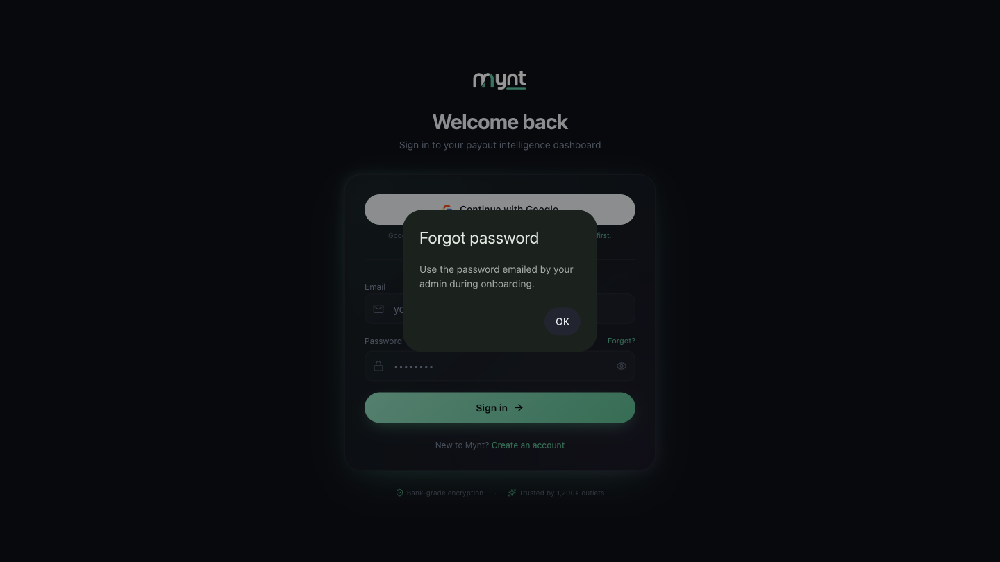

You can also tap Continue with Google. That works only if a Mynt account already exists for that Google address — it signs you in, it does not create an account.

New user? See How to create your Mynt account and sign in.
| Session | You stay signed in on that browser until you sign out or the session expires |
|---|---|
| Your business | The top of every page shows your business name, so you always know which account you are looking at |
| Dashboard access | Only people invited to your Mynt account can see your business data |
Mynt never asks for your Zomato or Swiggy passwords — only your Mynt login and, separately, permission to read your payout emails.
Tap Forgot? next to the Password box on the login screen. Mynt tells you to use the password that was emailed to you by your admin when your account was set up.

There is no self-service reset link today. If you cannot find that email, contact support and they will verify you own the account before helping.
Once you are signed in, you can change your password yourself at Settings → Security → Change Password. You need your current password to set a new one.
Under Settings → Security → Authentication you can add a second step to your sign-in. All three are optional and you set them up yourself:
| Authenticator app | Six-digit codes from an app like Google Authenticator |
|---|---|
| Passkey | Sign in with Face ID, Touch ID or a security key — no password at all |
| Recovery codes | One-time codes to use if you lose your phone or security key |
Adding or removing any of these asks you to confirm your password first. See How Mynt protects your business data.
Or open Help & Support in Mynt and raise a ticket.